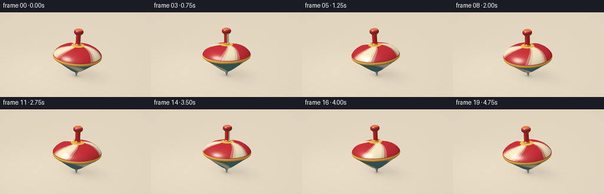
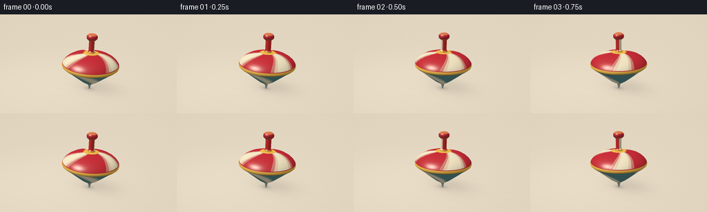

CODING AGENTS AS PIXEL WORLD MODELS
traex/GPT-6.1-Sol · instance_preservation_0037
点击播放 · 原生 RGB 像素
逐轮保存的候选
回放视频、检查图与代码变化。
每份候选均可单独播放。实际图片检查记录在下方工具轨迹中。
候选 01播放与检查图
点击播放 · 原生 RGB 像素


展开代码变化
--- 上一保存版本
+++ 本次保存版本
@@ -0,0 +1,207 @@
+"""Procedurally render a lacquered spinning toy top, with analytic geometry."""
+from pathlib import Path
+import json
+import math
+import numpy as np
+from PIL import Image
+import artifact_io
+
+ROOT = Path(__file__).resolve().parent
+SPEC = json.loads((ROOT / 'task_spec.json').read_text())
+W, H = SPEC['width'], SPEC['height']
+SS = 3
+RW, RH = W*SS, H*SS
+
+
+def unit(v):
+ return v / np.maximum(np.linalg.norm(v, axis=-1, keepdims=True), 1e-9)
+
+# Perspective rays, aimed slightly down at the table. A stationary camera.
+cam = np.array([3.5, -6.2, 4.0], dtype=np.float32)
+target = np.array([0., 0., 1.04], dtype=np.float32)
+fwd = unit(target-cam)
+right = unit(np.cross(fwd, np.array([0., 0., 1.])))
+up = np.cross(right, fwd)
+yy, xx = np.mgrid[:RH, :RW].astype(np.float32)
+rays = unit(fwd + (xx[..., None]-(RW-1)/2)/(300*SS)*right
+ - (yy[..., None]-(RH-1)/2)/(300*SS)*up).astype(np.float32)
+flat_rays = rays.reshape(-1, 3)
+
+# Fine, subdued wood grain: enough to anchor the top without distracting.
+tg = -cam[2]/rays[..., 2]
+ground = cam + rays*tg[..., None]
+gx, gy = ground[..., 0], ground[..., 1]
+grain = (0.55*np.sin(gy*96 + 1.3*np.sin(gx*1.8)) +
+ .25*np.sin(gy*219+.8*np.sin(gx*3.1)) +
+ .35*np.sin(gy*13 + .45*np.sin(gx*.9)))
+base_ground = np.zeros((RH, RW, 3), np.float32)
+base_ground[:] = [0.77, 0.68, 0.54]
+base_ground += grain[..., None]*np.array([.006, .007, .007])
+# Window illumination, gentle falloff and a warm, defocused background.
+illum = .99 + .075*np.exp(-((gx+2)**2+(gy+1)**2)/12)
+base_ground *= illum[..., None]
+vignette = 1-.075*((xx/RW-.5)**2+(yy/RH-.5)**2)
+
+# Body profile in local coordinates: metal pivot, inverted cone, round rim,
+# curved crown, narrow spindle and a rounded wooden handle.
+profile = np.array([
+ [.00,.017], [.05,.034], [.13,.052], [.19,.067],
+ [.22,.105], [.27,.185], [.36,.315], [.49,.470],
+ [.65,.657], [.82,.850], [.94,1.005], [.985,1.051],
+ [1.025,1.062], [1.065,1.055], [1.105,1.038],
+ [1.19,.973], [1.28,.870], [1.37,.714], [1.435,.517],
+ [1.477,.286], [1.488,.145], [1.535,.138],
+ [1.57,.105], [1.935,.104], [1.974,.148],
+ [2.015,.190], [2.08,.198], [2.132,.179],
+ [2.176,.130], [2.194,.068], [2.20,0.]
+], dtype=np.float32)
+slopes = np.diff(profile[:, 1])/np.diff(profile[:, 0])
+# Smooth crown and handle normals; the cone and gold lip retain crisp contours.
+vertex_slopes = np.r_[slopes[0], (slopes[:-1]+slopes[1:])/2, slopes[-1]]
+light = unit(np.array([-3.5, -4.2, 7.5], np.float32))
+fill = unit(np.array([4., 2., 4.], np.float32))
+
+
+def orientation(t):
+ # A fast stable spin with slight natural precession; it never falls over.
+ spin = 2*np.pi*(1.13*t + .025*np.sin(t*1.5))
+ wobble = .050 + .012*np.sin(1.8*t)
+ precession = 2*np.pi*.34*t+.55
+ axis = np.array([wobble*np.cos(precession), wobble*np.sin(precession), 1.])
+ axis = unit(axis)
+ e1 = unit(np.cross(np.array([0.,1.,0.]), axis))
+ e2 = np.cross(axis, e1)
+ x = e1*np.cos(spin) + e2*np.sin(spin)
+ y = -e1*np.sin(spin) + e2*np.cos(spin)
+ return np.stack([x,y,axis], axis=1).astype(np.float32)
+
+
+def render(t):
+ R = orientation(t)
+ # The pivot describes a very small orbit on the tabletop.
+ pivot = np.array([.037*np.cos(2.3*t), .025*np.sin(2.3*t), .001], np.float32)
+ # Contact occlusion and the broader soft shadow cast away from the key.
+ dx, dy = gx-pivot[0], gy-pivot[1]
+ shadow = .18*np.exp(-(((dx-.26)/.97)**2+((dy-.29)/.67)**2)*1.3)
+ shadow += .22*np.exp(-((dx/.27)**2+(dy/.19)**2)*1.5)
+ shadow += .19*np.exp(-((dx/.08)**2+(dy/.065)**2)*1.4)
+ bg = base_ground*(1-shadow[...,None])
+ out = bg.reshape(-1,3).copy()
+ # Only rays in the subject's generous screen bounding box need intersections.
+ bbox = (xx>RW*.25)&(xx<RW*.75)&(yy>RH*.10)&(yy<RH*.92)
+ ids = np.flatnonzero(bbox.ravel())
+ Dworld = flat_rays[ids]
+ D = Dworld @ R
+ O = (cam-pivot) @ R
+ n = len(ids)
+ nearest = np.full(n, np.inf, np.float32)
+ seg = np.full(n, -1, np.int16)
+ ox, oy, oz = O
+ dxr, dyr, dzr = D.T
+ qa = dxr*dxr + dyr*dyr
+ qb = 2*(ox*dxr+oy*dyr)
+ qc = ox*ox+oy*oy
+ for j in range(len(profile)-1):
+ z0, r0 = profile[j]
+ z1, r1 = profile[j+1]
+ k = slopes[j]
+ b = r0-k*z0
+ q = k*oz+b
+ A = qa-(k*dzr)**2
+ B = qb-2*q*k*dzr
+ C = qc-q*q
+ disc = B*B-4*A*C
+ sq = np.sqrt(np.maximum(disc, 0))
+ den = 2*A
+ den = np.where(np.abs(den)<1e-9, 1e-9, den)
+ for root in ((-B-sq)/den, (-B+sq)/den):
+ z = oz+root*dzr
+ ok = (disc>=0)&(root>0)&(root<nearest)&(z>=z0-1e-6)&(z<=z1+1e-6)
+ nearest[ok] = root[ok]
+ seg[ok] = j
+ valid = seg>=0
+ ids = ids[valid]
+ Dworld = Dworld[valid]
+ P = O + D[valid]*nearest[valid,None]
+ j = seg[valid]
+ z = P[:,2]
+ radius = np.maximum(np.linalg.norm(P[:,:2],axis=1),1e-7)
+ theta = np.arctan2(P[:,1],P[:,0])
+ blend = np.clip((z-profile[j,0])/(profile[j+1,0]-profile[j,0]),0,1)
+ smooth_k = vertex_slopes[j]*(1-blend)+vertex_slopes[j+1]*blend
+ hard = ((z>.19)&(z<1.11)) | ((z>1.49)&(z<1.975))
+ k = np.where(hard,slopes[j],smooth_k)
+ N = unit(np.column_stack([P[:,0]/radius, P[:,1]/radius, -k])) @ R.T
+ V = -Dworld
+
+ # Ivory pinwheel panels on a carmine crown. Their curved edges make the
+ # angular motion plainly visible even with a nearly symmetric silhouette.
+ red = np.array([.59,.028,.041])
+ cream = np.array([.93,.82,.57])
+ teal = np.array([.014,.255,.29])
+ gold = np.array([.91,.52,.075])
+ C = np.tile(red,(len(z),1)).astype(np.float32)
+ crown = (z>=1.106)&(z<1.495)
+ phase = (theta + .54*radius + .06*np.sin(theta*2))%(2*np.pi)
+ # Three slightly asymmetrical sweeping cream sectors.
+ cream_sector = ((phase>.08)&(phase<.76)) | ((phase>2.11)&(phase<2.82)) | ((phase>4.20)&(phase<4.88))
+ C[crown&cream_sector] = cream
+ lower = (z>=.22)&(z<.985)
+ C[lower] = teal
+ wave = np.cos(3*theta + 4.4*z)
+ stripe = lower&(wave>.64)
+ C[stripe] = cream*np.array([.91,.98,1.])
+ # Warm golden concentric accents around the rim and spindle base.
+ goldmask = ((z>=.978)&(z<=1.085)) | ((z>=1.477)&(z<=1.54)) | ((z>.187)&(z<.247))
+ C[goldmask] = gold
+ # Dark hairline beneath the rim reinforces the real volume.
+ edge = (z>.963)&(z<.98)
+ C[edge] = np.array([.12,.065,.032])
+ shaft = (z>1.54)&(z<1.974)
+ C[shaft] = np.array([.66,.035,.032])
+ # A pale stripe down the rotating red spindle gives an extra motion cue.
+ C[shaft&(np.cos(theta-.5)>.82)] = cream*.93
+ cap = z>=1.974
+ C[cap] = red*.94
+ C[cap&(z>2.142)] = np.array([.78,.20,.075])
+ metal = z<.188
+ C[metal] = np.array([.39,.44,.46])
+ # A restrained lacquer/wood texture follows the surface, never the camera.
+ texture = np.sin(theta*41+z*18)*np.sin(z*170+theta*4)
+ C *= 1+.008*texture[:,None]
+ ndl = np.maximum(N@light,0)
+ ndf = np.maximum(N@fill,0)
+ ambient = .28+.055*N[:,2]
+ diffuse = ambient + .67*ndl + .12*ndf
+ half = unit(V+light)
+ nh = np.maximum(np.sum(N*half,axis=1),0)
+ power = np.where(metal,110, np.where(goldmask,75,95))
+ spec = nh**power
+ fresnel = .055+.18*(1-np.maximum(np.sum(N*V,axis=1),0))**5
+ gloss = spec*(.63+fresnel)
+ # A broad luminous reflection from the window softbox.
+ broad = nh**15*.06
+ color = C*diffuse[:,None]+(gloss+broad)[:,None]*np.array([1.,.93,.80])
+ # Subtle warm bounced light from the tabletop on the underside of the cone.
+ color += (.045*np.maximum(-N[:,2],0))[:,None]*np.array([.85,.55,.24])
+ out[ids] = color
+ out = out.reshape(RH,RW,3)*vignette[...,None]
+ return np.clip(out,0,1)
+
+
+def main():
+ frames = []
+ # Three shutter samples: subtle rotation blur but crisp object contours.
+ for f in range(SPEC['frames']):
+ t = f/SPEC['fps']
+ linear = sum(render(t+dt)*weight for dt,weight in [(-.016,.25),(0.,.5),(.016,.25)])
+ srgb = np.where(linear<=.0031308,12.92*linear,1.055*np.maximum(linear,0)**(1/2.4)-.055)
+ im = Image.fromarray(np.uint8(np.clip(srgb*255+.5,0,255)))
+ im = im.resize((W,H),Image.Resampling.LANCZOS)
+ frames.append(np.asarray(im))
+ print(f'Rendered {f+1}/{SPEC["frames"]}',flush=True)
+ artifact_io.save(np.stack(frames),ROOT)
+ print('Saved RGB video artifacts.',flush=True)
+
+if __name__ == '__main__':
+ main()
可观测工具轨迹
实际执行的命令与返回图片。
命令 1exit 0
/bin/bash -lc 'ls -la && cat prompt.txt && cat GENERATION_RULES.md && cat task_spec.json'
命令 2exit 0
/bin/bash -lc 'cat artifact_io.py && cat player_template.html'
命令 3exit 0
/bin/bash -lc "python - <<'PY' import numpy, PIL print(numpy.__version__, PIL.__version__) PY"
命令 4exit 0
/bin/bash -lc "cat > generate.py <<'PY'
\"\"\"Procedurally render a lacquered spinning toy top, with analytic geometry.\"\"\"
from pathlib import Path
import json
import math
import numpy as np
from PIL import Image
import artifact_io
ROOT = Path(__file__).resolve().parent
SPEC = json.loads((ROOT / 'task_spec.json').read_text())
W, H = SPEC['width'], SPEC['height']
SS = 3
RW, RH = W*SS, H*SS
def unit(v):
return v / np.maximum(np.linalg.norm(v, axis=-1, keepdims=True), 1e-9)
# Perspective rays, aimed slightly down at the table. A stationary camera.
cam = np.array([3.5, -6.2, 4.0], dtype=np.float32)
target = np.array([0., 0., 1.04], dtype=np.float32)
fwd = unit(target-cam)
right = unit(np.cross(fwd, np.array([0., 0., 1.])))
up = np.cross(right, fwd)
yy, xx = np.mgrid[:RH, :RW].astype(np.float32)
rays = unit(fwd + (xx[..., None]-(RW-1)/2)/(300*SS)*right
- (yy[..., None]-(RH-1)/2)/(300*SS)*up).astype(np.float32)
flat_rays = rays.reshape(-1, 3)
# Fine, subdued wood grain: enough to anchor the top without distracting.
tg = -cam[2]/rays[..., 2]
ground = cam + rays*tg[..., None]
gx, gy = ground[..., 0], ground[..., 1]
grain = (0.55*np.sin(gy*96 + 1.3*np.sin(gx*1.8)) +
.25*np.sin(gy*219+.8*np.sin(gx*3.1)) +
.35*np.sin(gy*13 + .45*np.sin(gx*.9)))
base_ground = np.zeros((RH, RW, 3), np.float32)
base_ground[:] = [0.77, 0.68, 0.54]
base_ground += grain[..., None]*np.array([.006, .007, .007])
# Window illumination, gentle falloff and a warm, defocused background.
illum = .99 + .075*np.exp(-((gx+2)**2+(gy+1)**2)/12)
base_ground *= illum[..., None]
vignette = 1-.075*((xx/RW-.5)**2+(yy/RH-.5)**2)
# Body profile in local coordinates: metal pivot, inverted cone, round rim,
# curved crown, narrow spindle and a rounded wooden handle.
profile = np.array([
[.00,.017], [.05,.034], [.13,.052], [.19,.067],
[.22,.105], [.27,.185], [.36,.315], [.49,.470],
[.65,.657], [.82,.850], [.94,1.005], [.985,1.051],
[1.025,1.062], [1.065,1.055], [1.105,1.038],
[1.19,.973], [1.28,.870], [1.37,.714], [1.435,.517],
[1.477,.286], [1.488,.145], [1.535,.138],
[1.57,.105], [1.935,.104], [1.974,.148],
[2.015,.190], [2.08,.198], [2.132,.179],
[2.176,.130], [2.194,.068], [2.20,0.]
], dtype=np.float32)
slopes = np.diff(profile[:, 1])/np.diff(profile[:, 0])
# Smooth crown and handle normals; the cone and gold lip retain crisp contours.
vertex_slopes = np.r_[slopes[0], (slopes[:-1]+slopes[1:])/2, slopes[-1]]
light = unit(np.array([-3.5, -4.2, 7.5], np.float32))
fill = unit(np.array([4., 2., 4.], np.float32))
def orientation(t):
# A fast stable spin with slight natural precession; it never falls over.
spin = 2*np.pi*(1.13*t + .025*np.sin(t*1.5))
wobble = .050 + .012*np.sin(1.8*t)
precession = 2*np.pi*.34*t+.55
axis = np.array([wobble*np.cos(precession), wobble*np.sin(precession), 1.])
axis = unit(axis)
e1 = unit(np.cross(np.array([0.,1.,0.]), axis))
e2 = np.cross(axis, e1)
x = e1*np.cos(spin) + e2*np.sin(spin)
y = -e1*np.sin(spin) + e2*np.cos(spin)
return np.stack([x,y,axis], axis=1).astype(np.float32)
def render(t):
R = orientation(t)
# The pivot describes a very small orbit on the tabletop.
pivot = np.array([.037*np.cos(2.3*t), .025*np.sin(2.3*t), .001], np.float32)
# Contact occlusion and the broader soft shadow cast away from the key.
dx, dy = gx-pivot[0], gy-pivot[1]
shadow = .18*np.exp(-(((dx-.26)/.97)**2+((dy-.29)/.67)**2)*1.3)
shadow += .22*np.exp(-((dx/.27)**2+(dy/.19)**2)*1.5)
shadow += .19*np.exp(-((dx/.08)**2+(dy/.065)**2)*1.4)
bg = base_ground*(1-shadow[...,None])
out = bg.reshape(-1,3).copy()
# Only rays in the subject's generous screen bounding box need intersections.
bbox = (xx>RW*.25)&(xx<RW*.75)&(yy>RH*.10)&(yy<RH*.92)
ids = np.flatnonzero(bbox.ravel())
Dworld = flat_rays[ids]
D = Dworld @ R
O = (cam-pivot) @ R
n = len(ids)
nearest = np.full(n, np.inf, np.float32)
seg = np.full(n, -1, np.int16)
ox, oy, oz = O
dxr, dyr, dzr = D.T
qa = dxr*dxr + dyr*dyr
qb = 2*(ox*dxr+oy*dyr)
qc = ox*ox+oy*oy
for j in range(len(profile)-1):
z0, r0 = profile[j]
z1, r1 = profile[j+1]
k = slopes[j]
b = r0-k*z0
q = k*oz+b
A = qa-(k*dzr)**2
B = qb-2*q*k*dzr
C = qc-q*q
disc = B*B-4*A*C
sq = np.sqrt(np.maximum(disc, 0))
den = 2*A
den = np.where(np.abs(den)<1e-9, 1e-9, den)
for root in ((-B-sq)/den, (-B+sq)/den):
z = oz+root*dzr
ok = (disc>=0)&(root>0)&(root<nearest)&(z>=z0-1e-6)&(z<=z1+1e-6)
nearest[ok] = root[ok]
seg[ok] = j
valid = seg>=0
ids = ids[valid]
Dworld = Dworld[valid]
P = O + D[valid]*nearest[valid,None]
j = seg[valid]
z = P[:,2]
radius = np.maximum(np.linalg.norm(P[:,:2],axis=1),1e-7)
theta = np.arctan2(P[:,1],P[:,0])
blend = np.clip((z-profile[j,0])/(profile[j+1,0]-profile[j,0]),0,1)
smooth_k = vertex_slopes[j]*(1-blend)+vertex_slopes[j+1]*blend
hard = ((z>.19)&(z<1.11)) | ((z>1.49)&(z<1.975))
k = np.where(hard,slopes[j],smooth_k)
N = unit(np.column_stack([P[:,0]/radius, P[:,1]/radius, -k])) @ R.T
V = -Dworld
# Ivory pinwheel panels on a carmine crown. Their curved edges make the
# angular motion plainly visible even with a nearly symmetric silhouette.
red = np.array([.59,.028,.041])
cream = np.array([.93,.82,.57])
teal = np.array([.014,.255,.29])
gold = np.array([.91,.52,.075])
C = np.tile(red,(len(z),1)).astype(np.float32)
crown = (z>=1.106)&(z<1.495)
phase = (theta + .54*radius + .06*np.sin(theta*2))%(2*np.pi)
# Three slightly asymmetrical sweeping cream sectors.
cream_sector = ((phase>.08)&(phase<.76)) | ((phase>2.11)&(phase<2.82)) | ((phase>4.20)&(phase<4.88))
C[crown&cream_sector] = cream
lower = (z>=.22)&(z<.985)
C[lower] = teal
wave = np.cos(3*theta + 4.4*z)
stripe = lower&(wave>.64)
C[stripe] = cream*np.array([.91,.98,1.])
# Warm golden concentric accents around the rim and spindle base.
goldmask = ((z>=.978)&(z<=1.085)) | ((z>=1.477)&(z<=1.54)) | ((z>.187)&(z<.247))
C[goldmask] = gold
# Dark hairline beneath the rim reinforces the real volume.
edge = (z>.963)&(z<.98)
C[edge] = np.array([.12,.065,.032])
shaft = (z>1.54)&(z<1.974)
C[shaft] = np.array([.66,.035,.032])
# A pale stripe down the rotating red spindle gives an extra motion cue.
C[shaft&(np.cos(theta-.5)>.82)] = cream*.93
cap = z>=1.974
C[cap] = red*.94
C[cap&(z>2.142)] = np.array([.78,.20,.075])
metal = z<.188
C[metal] = np.array([.39,.44,.46])
# A restrained lacquer/wood texture follows the surface, never the camera.
texture = np.sin(theta*41+z*18)*np.sin(z*170+theta*4)
C *= 1+.008*texture[:,None]
ndl = np.maximum(N@light,0)
ndf = np.maximum(N@fill,0)
ambient = .28+.055*N[:,2]
diffuse = ambient + .67*ndl + .12*ndf
half = unit(V+light)
nh = np.maximum(np.sum(N*half,axis=1),0)
power = np.where(metal,110, np.where(goldmask,75,95))
spec = nh**power
fresnel = .055+.18*(1-np.maximum(np.sum(N*V,axis=1),0))**5
gloss = spec*(.63+fresnel)
# A broad luminous reflection from the window softbox.
broad = nh**15*.06
color = C*diffuse[:,None]+(gloss+broad)[:,None]*np.array([1.,.93,.80])
# Subtle warm bounced light from the tabletop on the underside of the cone.
color += (.045*np.maximum(-N[:,2],0))[:,None]*np.array([.85,.55,.24])
out[ids] = color
out = out.reshape(RH,RW,3)*vignette[...,None]
return np.clip(out,0,1)
def main():
frames = []
# Three shutter samples: subtle rotation blur but crisp object contours.
for f in range(SPEC['frames']):
t = f/SPEC['fps']
linear = sum(render(t+dt)*weight for dt,weight in [(-.016,.25),(0.,.5),(.016,.25)])
srgb = np.where(linear<=.0031308,12.92*linear,1.055*np.maximum(linear,0)**(1/2.4)-.055)
im = Image.fromarray(np.uint8(np.clip(srgb*255+.5,0,255)))
im = im.resize((W,H),Image.Resampling.LANCZOS)
frames.append(np.asarray(im))
print(f'Rendered {f+1}/{SPEC[\"frames\"]}',flush=True)
artifact_io.save(np.stack(frames),ROOT)
print('Saved RGB video artifacts.',flush=True)
if __name__ == '__main__':
main()
PY
python generate.py"命令 5exit 0
/bin/bash -lc "python - <<'PY'
from pathlib import Path
import numpy as np
from PIL import Image
p=Path('.')
a=np.load('pixels.npz')['pixels']
files=sorted((p/'frames').glob('*.png'))
assert a.shape==(144,256,20)
assert len(files)==20
assert all(Image.open(f).mode=='RGB' and Image.open(f).size==(256,144) for f in files)
f=np.array([np.asarray(Image.open(v)) for v in files])
print('Validated 20 RGB frames at 256 x 144.')
print('Mean consecutive-frame pixel change:',round(float(np.abs(np.diff(f.astype(float),axis=0)).mean()),3))
for n in ['generate.py','pixels.npz','index.html','inspection.png','transition_check.png']:
print(n,(p/n).stat().st_size,'bytes')
PY"保存候选 1 份；完成命令 5 次；可验证图片返回 0 张。原始 API 响应与完整日志保留在本地。